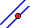
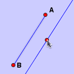

Add a Parallel Line

Click a line and click another point to construct a parallel line. The action is devided into three steps:
- Click on an existing line, the line will be selected.
- Move the pointer to another position, click again. This click will select or construct a point, See Add a Point.
- A parallel line is constructed. The line contains the selected point and is parallel to the selected line.
